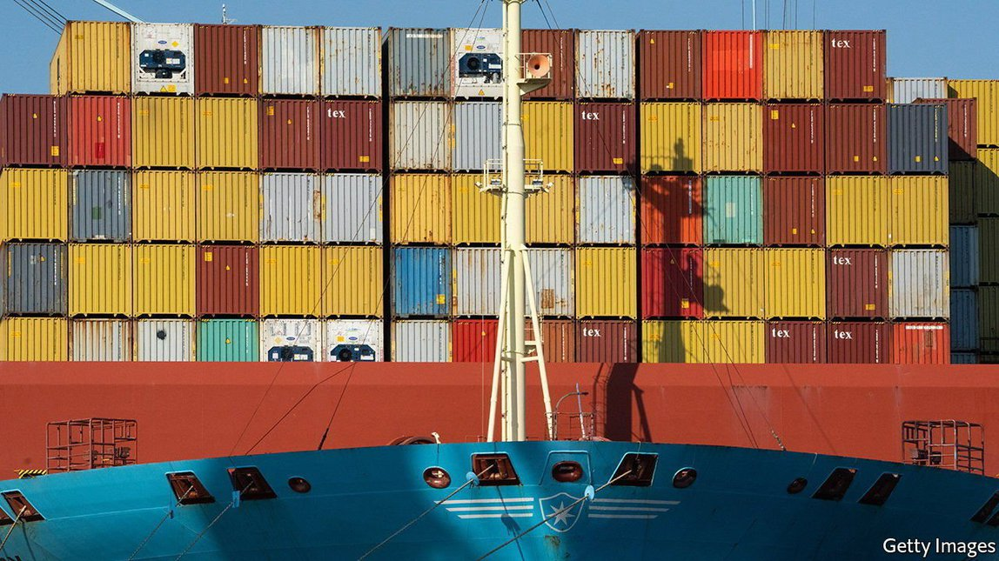
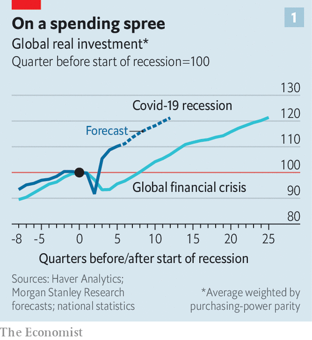
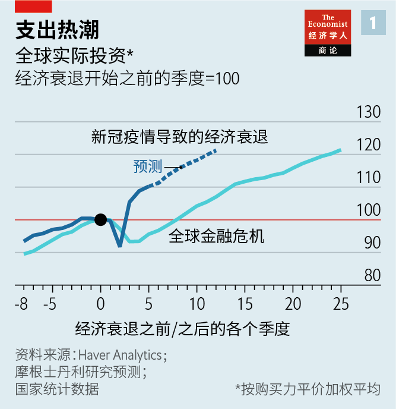
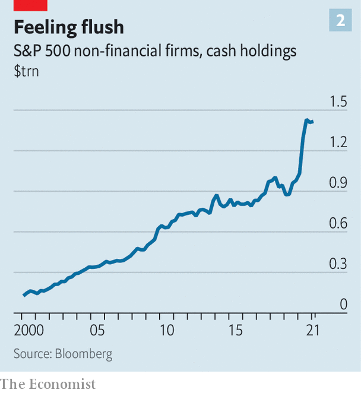
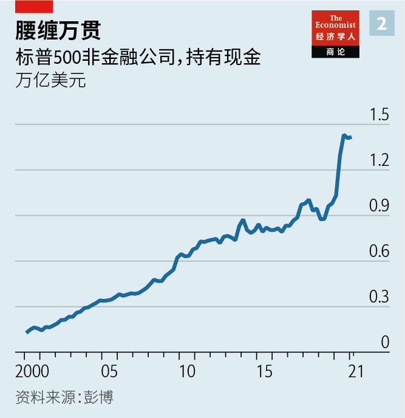

Text
2021-06-07T15:31:27+00:00
Capex carnival
资本支出盛宴
資本支出盛宴
An investment bonanza is coming
投资狂潮来袭
投資狂潮來襲
Firms across the world are spending big. We analyse their capital-expenditure plans
世界各地的公司都在大举投资。我们分析了它们的资本支出计划
世界各地的公司都在大舉投資。我們分析了它們的資本支出計劃
AS LOCKDOWNS LIFT across the rich world, people are going out and spending. Australia’s restaurants have been crammed for months. America’s shopping malls are filled with people splurging stimulus cheques. Cinemas in Britain, which were allowed to reopen in mid-May, are packed once again. Yet behind the scenes another, potentially more significant, spending bonanza is just beginning.
随着发达国家纷纷解除封锁，人们开始外出消费。澳大利亚的餐馆过去几个月里熙来攘往。美国的购物中心里挤满了要把领到的经济刺激支票花出去的民众。英国在5月中旬获准重开的电影院再次人头济济。不过在幕后，另一场意义可能更为深远的撒钱大潮才刚刚掀起。
隨着發達國家紛紛解除封鎖，人們開始外出消費。澳大利亞的餐館過去幾個月里熙來攘往。美國的購物中心裡擠滿了要把領到的經濟刺激支票花出去的民眾。英國在5月中旬獲准重開的電影院再次人頭濟濟。不過在幕後，另一場意義可能更為深遠的撒錢大潮才剛剛掀起。
Businesses are starting to invest in huge numbers. In America capital spending (or capex) by companies is rising at an annual rate of 15%, both on the hard stuff, such as machines and factories, and intangibles, like software. Firms in other parts of the world are also ramping up spending. Forecasts for business investment have never looked so rosy. Analysts at Morgan Stanley, a bank, predict a “red-hot capex cycle”. Overall global investment, they reckon, will soar to 121% of pre-recession levels by the end of 2022 (see chart 1). Oxford Economics, a consultancy, argues that “the time looks right for a boom in capex”, while IHS Markit, a research firm, forecasts that global real fixed investment will rise by more than 6% this year.
企业开始大手笔投资。美国公司的资本支出正以每年15%的速度增加——不论是投向机器和工厂等有形资产还是软件等无形资产。世界其他地区的公司也在扩大支出。对商业投资前景的预测从未如此乐观。摩根士丹利的分析师预测将出现“白热化的资本支出周期”。他们认为，到2022年底全球整体投资将飙升至经济衰退前水平的121%（见图表1）。咨询机构牛津经济研究院认为，“目前看起来是资本支出激增的恰当时机”。而研究公司埃信华迈（IHS Markit）预测，全球实际固定资产投资今年将增长6%以上。
企業開始大手筆投資。美國公司的資本支出正以每年15%的速度增加——不論是投向機器和工廠等有形資產還是軟件等無形資產。世界其他地區的公司也在擴大支出。對商業投資前景的預測從未如此樂觀。摩根士丹利的分析師預測將出現“白熱化的資本支出周期”。他們認為，到2022年底全球整體投資將飆升至經濟衰退前水平的121%（見圖表1）。諮詢機構牛津經濟研究院認為，“目前看起來是資本支出激增的恰當時機”。而研究公司埃信華邁（IHS Markit）預測，全球實際固定資產投資今年將增長6%以上。
Today’s optimism marks quite a change from the pre-pandemic norm. In America gross domestic business investment, as a share of GDP, had been sluggish since the early 1980s. After the financial crisis of 2007-09 it took more than two years for global investment, in real terms, to regain its previous peak. By contrast, although investment fell more steeply at the start of the pandemic, it has been quicker to bounce back this time. The prospect of surging capex holds out promise that the global economy will not face a repeat of the 2010s, when growth in productivity and GDP stayed stubbornly below pre-crisis trends. Investment in new products, technologies and business practices is, after all, the foundation for higher incomes and a better quality of life. So what is behind the capex cheer—and could it last?
当前的乐观情绪相比疫情前常态显现出一种相当大的变化。自上世纪80年代初以来，美国国内商业投资占GDP的比重持续低迷。2007到2009年金融危机后，全球投资实值用了两年多的时间才重回之前的峰值。相比之下，尽管这次疫情爆发之初投资下挫更猛，但反弹的速度也更快。资本支出激增的前景让人有理由预期全球经济将不会重演2010年代的情形——当时生产率和GDP的增速始终低于危机前水平。毕竟，对新产品、技术和商业活动的投资是增加收入和提高生活质量的基础。那么，这轮资本支出热潮的驱动力是什么？它能否持续下去？
當前的樂觀情緒相比疫情前常態顯現出一種相當大的變化。自上世紀80年代初以來，美國國內商業投資佔GDP的比重持續低迷。2007到2009年金融危機後，全球投資實值用了兩年多的時間才重回之前的峰值。相比之下，儘管這次疫情爆發之初投資下挫更猛，但反彈的速度也更快。資本支出激增的前景讓人有理由預期全球經濟將不會重演2010年代的情形——當時生產率和GDP的增速始終低於危機前水平。畢竟，對新產品、技術和商業活動的投資是增加收入和提高生活質量的基礎。那麼，這輪資本支出熱潮的驅動力是什麼？它能否持續下去？
To understand why analysts are so upbeat, consider the firms included in the S&P 500, America’s main stockmarket index. Together they account for about one dollar in seven of total rich-world corporate capital formation. In a recent report Bank of America analyses these companies’ earnings calls since 2006, and concludes that executives are at their most bullish about capex. The Economist has looked at the biggest 25 non-financial firms in the S&P 500 and found that analysts’ expectations for capex in 2021 have risen by 10% in the past year.
要理解分析师为何如此乐观，不妨看看美国主要股指标普500所包含的公司，它们合计约占到发达国家公司资本形成总额的七分之一。美国银行（Bank of America）最近的一份报告分析了这些公司自2006年以来的财报电话会议，得出结论称，眼下公司管理层对资本支出的热情攀升到了最高峰。本刊研究了标普500指数中最大的25家非金融公司，发现分析师对2021年资本支出的预期在过去一年上升了10%。
要理解分析師為何如此樂觀，不妨看看美國主要股指標普500所包含的公司，它們合計約佔到發達國家公司資本形成總額的七分之一。美國銀行（Bank of America）最近的一份報告分析了這些公司自2006年以來的財報電話會議，得出結論稱，眼下公司管理層對資本支出的熱情攀升到了最高峰。本刊研究了標普500指數中最大的25家非金融公司，發現分析師對2021年資本支出的預期在過去一年上升了10%。
For now the investment recovery is concentrated in a few industries. We find that global tech firms are expected to boost capex by 42% this year, relative to 2019. Apple will invest $430bn in America over a five-year period, an upgrade of 20% on previous plans. Taiwan’s TSMC, the world’s largest semiconductor-maker, recently announced that it would invest $100bn over the next three years in manufacturing. Analysts reckon that Samsung’s capex will rise by 13% this year, having gone up by 45% in 2020.
目前，投资复苏主要集中在少数几个行业。我们发现，全球科技公司今年的资本支出预计将比2019年增加42%。苹果未来五年将在美国投资4300亿美元，比之前的计划加码20%。全球最大的半导体制造商台积电最近宣布，未来三年将在制造上投资1000亿美元。分析师预计，三星的资本支出在2020年增长45%的基础上，今年将再增加13%。
目前，投資復蘇主要集中在少數幾個行業。我們發現，全球科技公司今年的資本支出預計將比2019年增加42%。蘋果未來五年將在美國投資4300億美元，比之前的計劃加碼20%。全球最大的半導體製造商台積電最近宣布，未來三年將在製造上投資1000億美元。分析師預計，三星的資本支出在2020年增長45%的基礎上，今年將再增加13%。
Tech companies are spending so freely in part because the pandemic has created new demands. More shopping happens online. Remote work is on the rise. New equipment and software is needed for these to run smoothly. Recent research by Nicholas Bloom of Stanford University and Steven Davis and Yulia Zhestkova of the University of Chicago finds a big rise in the share of patent filings for work-from-home technologies. UBS, another bank, reckons that shipments of computers for commercial use will rise by nearly 10% this year, an acceleration even over the last.
科技公司如此大把撒钱，原因之一是疫情创造了新的需求。更多购物转移到了线上。远程工作正在兴起。这些要流畅运行都需要新的设备和软件。斯坦福大学的尼古拉斯·布鲁姆（Nicholas Bloom）和芝加哥大学的史蒂文·戴维斯（Steven Davis）以及尤利娅·热斯特科瓦（Yulia Zhestkova）最近的研究发现，居家办公技术在专利申请中的占比大幅上升。另一家银行瑞银估计，商用电脑的出货量今年将增长近10%，增速甚至高于去年。
科技公司如此大把撒錢，原因之一是疫情創造了新的需求。更多購物轉移到了線上。遠程工作正在興起。這些要流暢運行都需要新的設備和軟件。斯坦福大學的尼古拉斯·布魯姆（Nicholas Bloom）和芝加哥大學的史蒂文·戴維斯（Steven Davis）以及尤利婭·熱斯特科瓦（Yulia Zhestkova）最近的研究發現，居家辦公技術在專利申請中的佔比大幅上升。另一家銀行瑞銀估計，商用電腦的出貨量今年將增長近10%，增速甚至高於去年。
Tech firms are not the only enthusiastic spenders. Firms in the S&P 500 that focus on discretionary consumer spending boosted capex by 36% year-on-year in the first quarter. Companies such as Target and Walmart, two retailers, are trying to keep up with the online giants that are eating their lunch. Marks & Spencer, an august British retailer, recently announced that it had launched 46 new websites in overseas markets from Iceland to Uzbekistan.
热衷花钱的不只是科技公司。标普500指数中的非必需消费品公司第一季度的资本支出同比增加了36%。零售商塔吉特（Target）和沃尔玛等企业正在努力追赶那些抢夺了自己的市场份额的网络巨头。英国老牌零售商玛莎百货（Marks & Spencer）最近宣布已在从冰岛到乌兹别克斯坦的海外市场上开设了46个新网站。
熱衷花錢的不只是科技公司。標普500指數中的非必需消費品公司第一季度的資本支出同比增加了36%。零售商塔吉特（Target）和沃爾瑪等企業正在努力追趕那些搶奪了自己的市場份額的網絡巨頭。英國老牌零售商瑪莎百貨（Marks & Spencer）最近宣布已在從冰島到烏茲別克斯坦的海外市場上開設了46個新網站。
Other retailers are spending frantically to expand capacity, having been caught out by the surge in household spending. Everything from sofas to hot tubs is in short supply. Earlier this year Peloton announced “substantial incremental investments” in expediting the transport of its exercise bikes from Taiwan. Maersk, a shipping firm, recently said it would buy more containers to ease bottlenecks. The global order-book for enormous container ships has risen from 9% of the existing fleet, in October, to over 15% in April.
被家庭支出激增杀了个措手不及的其他零售商正在疯狂投资扩大产能。从沙发到浴缸，一切都供不应求。今年早些时候，Peloton宣布“实质性的增量投资”以加快从台湾进口健身自行车。航运公司马士基（Maersk）最近表示将购买更多集装箱来缓解瓶颈。全球巨型集装箱船的订单在去年10月占现有运力的9%，到今年4月已上升至超过15%。
被家庭支出激增殺了個措手不及的其他零售商正在瘋狂投資擴大產能。從沙發到浴缸，一切都供不應求。今年早些時候，Peloton宣布“實質性的增量投資”以加快從台灣進口健身自行車。航運公司馬士基（Maersk）最近表示將購買更多集裝箱來緩解瓶頸。全球巨型集裝箱船的訂單在去年10月占現有運力的9%，到今年4月已上升至超過15%。
The big question is whether the emerging capex boom augurs a broad and lasting shift away from the weakness of the 2010s, or is simply an enthusiastic but temporary response to reopening. Not everyone is boosting capex: our analysis suggests that about half of the companies in the S&P 500 are not expected to invest more in 2021 than they did in 2019. Global oil-and-gas firms are cutting back by a tenth relative to pre-pandemic levels, possibly in response to lower expected demand for their planet-warming fare. Airline operators are also dialling down spending, perhaps because they expect it to be a while before people can travel freely again. Many executives, including those from raw-materials and industrial-goods firms, continue to preach capital discipline. It may be quite a leap for them to go from a decade of austerity to boom time.
一个关键问题是，正在冒头的这轮资本支出热潮是预示着世界将从之前疲软的十年广泛而长久的转向，还是仅仅是对经济重启热烈却短暂的反应？并非所有公司都在扩大资本支出：我们的分析显示标普500指数公司当中约有一半预计2021年的投资不会超过2019年的水平。全球油气公司的投资较疫情前削减了十分之一，可能是因为预见到它们那些让地球变暖的产品将面临需求减少。航空公司也在削减开支，也许是因为预计人们还需要一段时间才能再次自由出行。原材料和工业品等企业的许多高管仍在大谈投资纪律性。对他们来说，可能很难一下子从紧缩的十年转向繁荣的时代。
一個關鍵問題是，正在冒頭的這輪資本支出熱潮是預示着世界將從之前疲軟的十年廣泛而長久的轉向，還是僅僅是對經濟重啟熱烈卻短暫的反應？並非所有公司都在擴大資本支出：我們的分析顯示標普500指數公司當中約有一半預計2021年的投資不會超過2019年的水平。全球油氣公司的投資較疫情前削減了十分之一，可能是因為預見到它們那些讓地球變暖的產品將面臨需求減少。航空公司也在削減開支，也許是因為預計人們還需要一段時間才能再次自由出行。原材料和工業品等企業的許多高管仍在大談投資紀律性。對他們來說，可能很難一下子從緊縮的十年轉向繁榮的時代。
Another worry is the trend towards greater consolidation in industries from hotels to mining, which seems unlikely to have been reversed by covid-19. Research by the IMF suggests that companies with market power may be less keen on investing. In the five years before the pandemic, for instance, American business investment in hotels was barely higher than it was in the five years before the financial crisis, even though demand was far higher.
另一个担忧是，从酒店到采矿的诸多行业进一步整合的趋势看起来不太可能因为疫情而逆转。国际货币基金组织的研究表明，拥有市场支配地位的公司可能没那么热衷于投资。以酒店业为例，尽管疫情之前五年里的需求远高于金融危机之前的五年，但美国对酒店的商业投资却几乎没有变化。
另一個擔憂是，從酒店到採礦的諸多行業進一步整合的趨勢看起來不太可能因為疫情而逆轉。國際貨幣基金組織的研究表明，擁有市場支配地位的公司可能沒那麼熱衷於投資。以酒店業為例，儘管疫情之前五年里的需求遠高於金融危機之前的五年，但美國對酒店的商業投資卻幾乎沒有變化。
Set against that, though, economic conditions today could convince reluctant companies to loosen the purse-strings. In contrast to the post-financial-crisis period, households have a lot of savings to spend. A more decisive fiscal and monetary response this time has also allowed firms to load up on cash (see chart 2). Bond issuance by investment-grade-rated American companies jumped to a record $1.7trn in 2020, up from $1.1trn in 2019, according to S&P Global Market Intelligence, a research outfit.
但与之不同的是，当前的经济状况可能会说服那些不大情愿的企业也打开钱袋子。与金融危机过后的那段时期相比，现在美国家庭有大量储蓄可供消费。这次更果断的财政和货币政策也让企业积累了大量现金（见图表2）。研究机构标普全球市场财智（S&P Global Market Intelligence）的数据显示，2020年美国公司投资级债券发行量创下新高，从2019年的1.1万亿美元跃升至1.7万亿美元。
但與之不同的是，當前的經濟狀況可能會說服那些不大情願的企業也打開錢袋子。與金融危機過後的那段時期相比，現在美國家庭有大量儲蓄可供消費。這次更果斷的財政和貨幣政策也讓企業積累了大量現金（見圖表2）。研究機構標普全球市場財智（S&P Global Market Intelligence）的數據顯示，2020年美國公司投資級債券發行量創下新高，從2019年的1.1萬億美元躍升至1.7萬億美元。
Moreover, the economic reallocation provoked by covid-19, and its investment implications, will be felt for some time. Managers in certain industries, especially semiconductors, already accept that they went into the pandemic with too little spare capacity, and are promising multi-year projects to make up for it. Perhaps most important, the pandemic is leading to an era of greater technological optimism. The rapid deployment of entirely new business models when covid-19 struck, not to mention vaccine discovery, may have reminded bosses of the payoff to investing. All that might explain why the expectations for capex by S&P 500 firms in 2022 are even more ambitious than those for this year. The investment boom may only be getting started. ■
此外，疫情引发的经济再分配及其对投资的影响还会再持续一段时间。某些行业的经营者，尤其是半导体行业，已经承认自己在进入疫情年代时备用产能严重不足，并许诺投资多年期的项目来弥补缺口。也许最重要的是，这次疫情开启了一个对技术更加乐观的时代。疫情爆发后，全新的商业模式迅速普及，更不用说疫苗的研发，这些或许都让老板们再度意识到了投资的回报潜力。这一切或许可以解释为何标普500指数公司对2022年资本支出的预期甚至比今年还要高。投资热潮可能才刚刚开始。
此外，疫情引發的經濟再分配及其對投資的影響還會再持續一段時間。某些行業的經營者，尤其是半導體行業，已經承認自己在進入疫情年代時備用產能嚴重不足，並許諾投資多年期的項目來彌補缺口。也許最重要的是，這次疫情開啟了一個對技術更加樂觀的時代。疫情爆發後，全新的商業模式迅速普及，更不用說疫苗的研發，這些或許都讓老闆們再度意識到了投資的回報潛力。這一切或許可以解釋為何標普500指數公司對2022年資本支出的預期甚至比今年還要高。投資熱潮可能才剛剛開始。